Чертовы Ворота - Пик Чекановского. Водопады. (10-12 июня
2007)
|
12 июня, день третий. Водопады на Посетительском,
Каменке, Подкомарной.
Хотя день выдался солнечный, с утра бы такого никто
не сказал - в небе сплошная серая пелена, дует ветер. Вчерашние
дрова сухие, разводим последний костер. Надо сказать продуктов
набрали много, поэтому ели от пуза. И пили. Чай.
Сбор полнейший, решили идти с рюкзаками по всем водопадам и выходить
у метеостанции. Оно, конечно, может и не совсем рационально, но
в плане тренировки организма и укрепления боевого духа вполне
обосновано.
10 утра. Переходим ручей Посетительский, справа
тропа, немного вниз и вот первый водопад. Белый пенный слив по
наклонному желобу, а внизу небольшой водопадик.
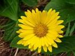 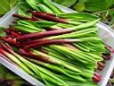 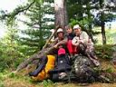 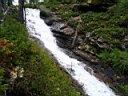 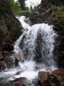
|
|
Дальше вниз по ручью, до речки Каменки. Здесь рюкзаки можно скинуть,
перейти ручей и пробежаться немного вверх по течению реки. Верхний
каскад водопадов тоже по сути большой слив, пенный и немного ломаный,
а внизу небольшой водопад с бассейном. Вода изумрудная, играет
на солнце.
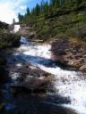 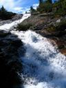 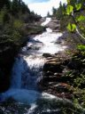 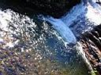
|
|
Возвращаемся к рюкзакам, спускаемся дальше по Каменке правым
берегом. Перед центральным каскадом желательно перейти на другой
берег, а то на правом придется скакать по курумнику. Вот здесь
уже реальные водопады - первые два скромные, зато последний, нижний,
самый большой и впечатляющий.
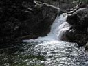 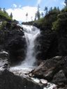 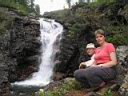
|
|
Дальше левым берегом Каменки выходим на речку Подкомарную. Тут
мы перепрыгнули на левый берег Подкомарной и до прижима, до начала
слива первого водопада нижнего каскада. Водопад здесь срывается
в глубокий, узкий и мрачный каньон. Посмотрели сверху вниз и хватит,
переходим Подкомарную на правый берег и идем вниз по тропе. С
тропы отходят ответвления на обзорные площадки, с них видно и
узкий каньон с другой стороны, и другие водопады каскада. Особенно
красив самый большой средний водопад, хорошо освещается солнцем
и места для купания хватает. Там еще где-то ниже водопад есть,
но до него надо было далеко спускаться и мы не пошли. Впечатлений
хватило, а метеостанцию хоть и видно, но далеко и высоко.
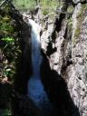 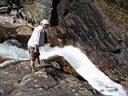 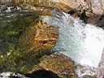 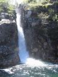
|
|
Спускаемся вдоль реки по огромным камням, тропа между ними петляет,
как может. Возле речки делаем привал. Жара, купаемся и обедаем.
После обеда продуктов конечно меньше тащить, но тащиться вверх
все равно тяжело. Потому как метеостанция оказалась повыше речки
и, немного поплутав по лесу, вышли на суходол. Крутой подъем,
полчаса по сыпухе и вот она, идиллия - птички чебещут, лошадки
пасутся, домики среди леса, дымок из трубы. Затерянный в тайге
хуторок :)
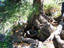 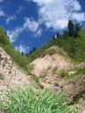 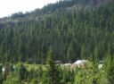 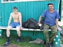
А вот и хуторяне - Денис и Андрей. Поговорили, рассказали,
где бродили, и как оно там. Время 6 вечера, пора уже и до дому
ходить, путь не близкий, хоть и вниз по речке Слюдянке. По Комару
в другой раз прогуляемся.
На обратной дороге нас догнал и обогнал Андрей с метеостанции,
правда успел рассказать много интересного и полезного. Еще догоняли-обгоняли
интересную компанию - сын, мама и бабушка. Внук в конце пути ехал
в рюкзаке у бабушки.
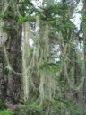 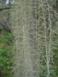 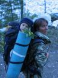
11 вечера, у 3-го брода вызвонили Андрея на внедорожнике
и к 12-ти доехали до подъезда. Вот такое рандеву, каждый вечер
все позже и позже. Так и по ночам ходить начнем :) Ну это в другой
раз, а пока традиционные пельмени, чай с бесконечными печеньями,
просмотр фотографий. Три сотни и удалять почти нечего, а это значит
- сходили хорошо!
|
Июнь 2007
Алексей Белокрылов
Фотографии автора :)
Заход. Чертовы ворота - пик Чекановского.
|